Hadoop HA模拟搭建集群条件准备：
3台虚拟机centos7 64位
本地搭建虚拟机；我们采用.net内网模式
Hadoop HA搭建 1、SSH相互信任配置和host文件配置 凡是没说明使用root用户的步骤都是hadoop用户
1.先创建hadoop用户和hadoop用户的密码；进入hadoop用户【使用root用户】
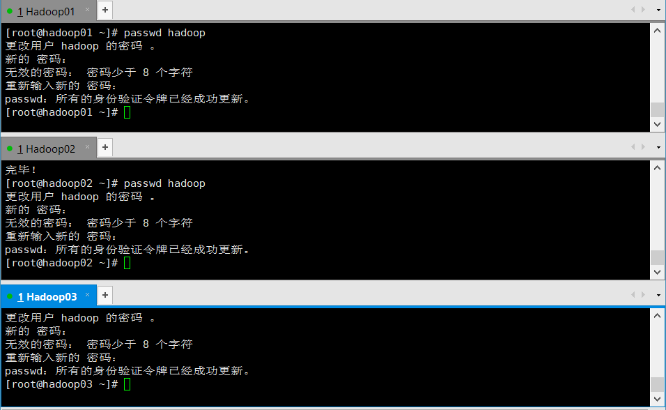
2.创建app目录；安装yum install lrzsz 传送安装包
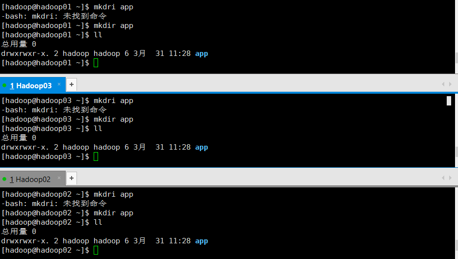
3.如果hadoop用户之前有做ssh；先删除hadoop用户下的.ssh
4.使用命令ssh-keygen生产密钥【点击三次enter即可】
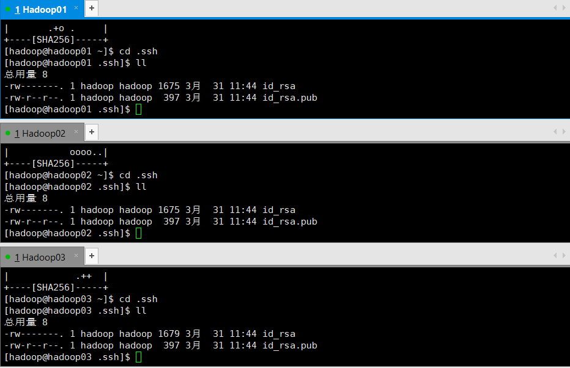
5. 先进入hadoop01将hadoop01公钥放入authorized_keys；同时将hadoop02和hadoop03的公钥放入hadoop01
[hadoop@hadoop01 .ssh]$ cat id_rsa.pub >> authorized_keyshadoop@192.168.232.5 :/home/hadoop/.ssh/id_rsa2hadoop@192.168.232.5 :/home/hadoop/.ssh/id_rsa3
6. 将hadoop02和hadoop03的公钥追加到信任文件authorized_keys
[hadoop@hadoop01 .ssh]$ cat id_rsa2 >> authorized_keys
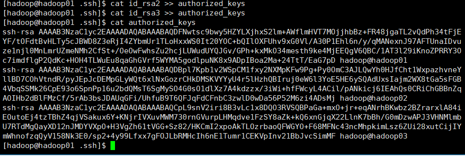
7. 配置/etc/hosts文件【使用root用户】
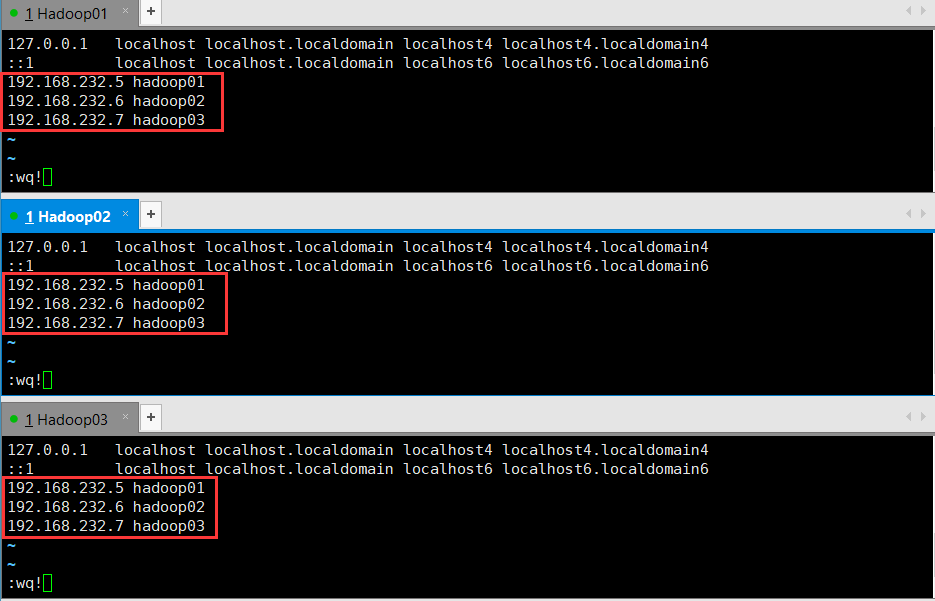
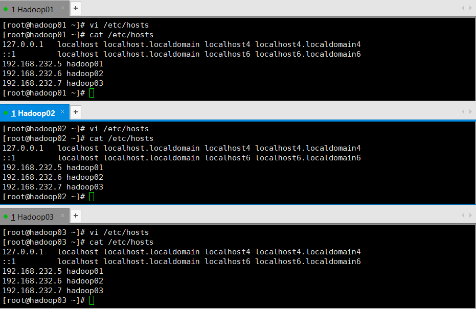
8. 拷贝hadoop01信任文件authorized_keys到hadoop02和hadoop03
[hadoop@hadoop01 .ssh]$ scp authorized_keys hadoop@hadoop02:/home/hadoop/.ssh/
9. 这个时候就可以利用命令 ssh XXX date 来测试相互登录了【有坑】
权限改之前每次ssh会有密码提示；这代表ssh免密登录配置失败
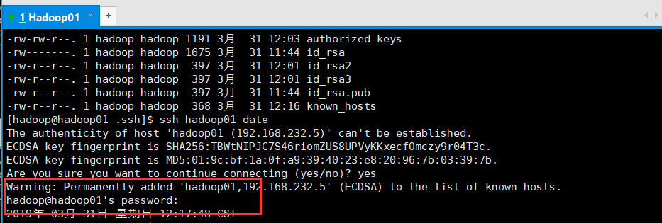
改权限 ：这里有个坑；就是hadoop目录里authorized_keys需要更改权限600的问题
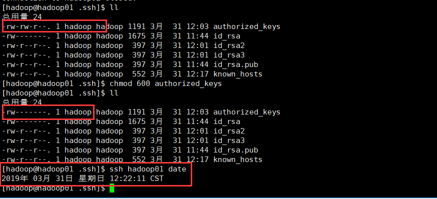
记住：每台机器都要测试对其他两台和自己的连接关系；因为第一次连接需要输入yes
known_hosts是记录每台第一次连接进入的信息；也就是我们输入yes后会有记录在known_hosts里。
2、JDK部署 1.将解压包解压到mkdir /usr/java/ 【用root用户】
2.权限变更
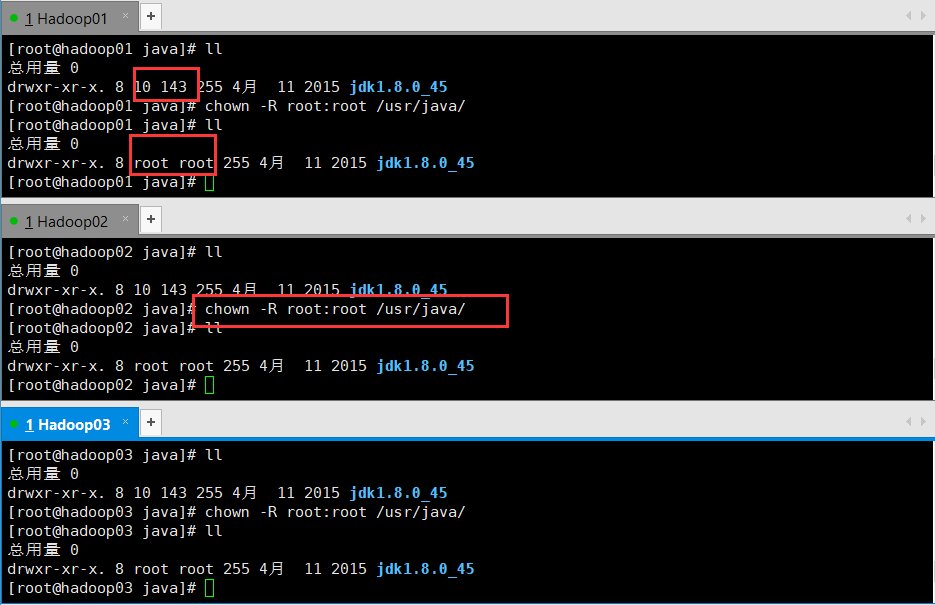
3、防火墙【云主机一般不必关注】 CentOS7使用firewalld打开关闭防火墙与端口
2.systemctl是CentOS6 service iptables
4、Zookeeper部署及定位 1.解压zk
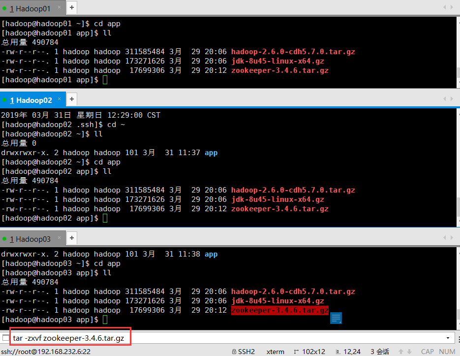
2. 建立软连接
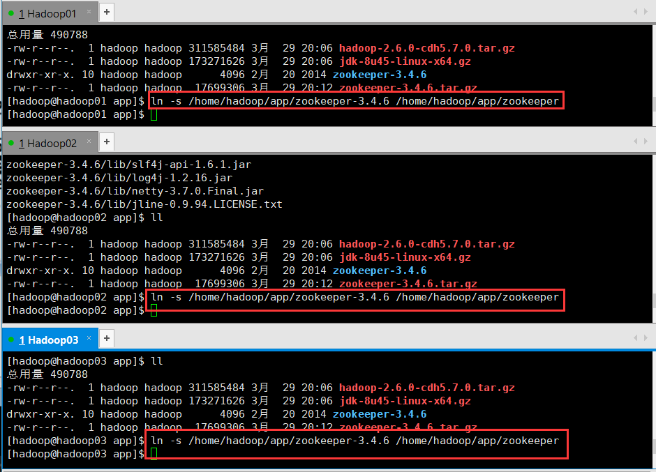
3. 进入zoo.cfg配置hadoop01的zk
[hadoop@hadoop01 app]$ cd zookeeper
更改配置文件zoo.cfg
1 2 3 4 5 dataDir=/home/hadoop/app/zookeeper/data server.1=hadoop01:2888:3888 server.2=hadoop02:2888:3888 server.3=hadoop03:2888:3888
[hadoop@hadoop01 zookeeper]$ touch data/myid 【这里的data就是/home/hadoop/app/zookeeper/data】
拷贝zoo.cfg到hadoop02和hadoop03
拷贝data目录到hadoop02和hadoop03
修改myid文件【一个>号相当于覆盖】
4、配置环境变量【~./bash_profile】完毕后加载一下source ~/.bash_profile
1 2 3 4 export JAVA_HOME=/usr/java/jdk1.8.0_45export ZOOKEEPER_HOME=/home/hadoop/app/zookeeperexport PATH=$JAVA_HOME /bin:$ZOOKEEPER_HOME /bin:$PATH
5、启动加查看状态
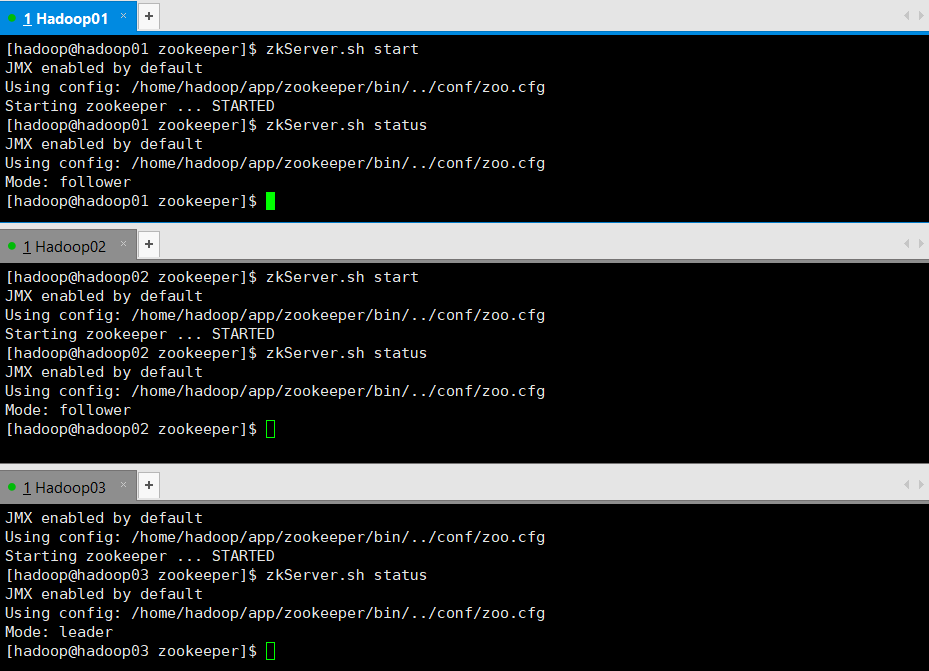
注意：如有出错以debug模式检查；shell脚本启动打开debug模式的方法在第一行加入（-x）即可如下：
5、部署Hadoop 1.解压jar包；并建立软连接
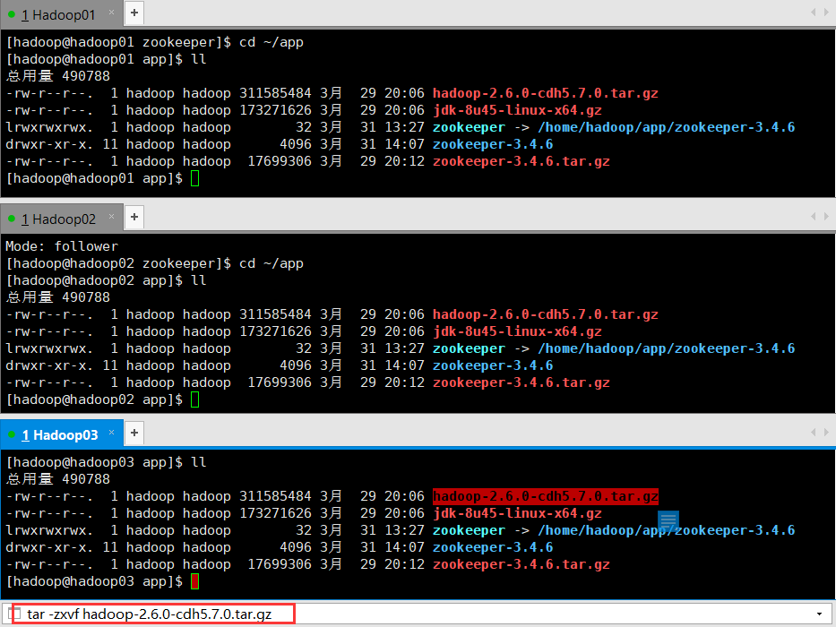
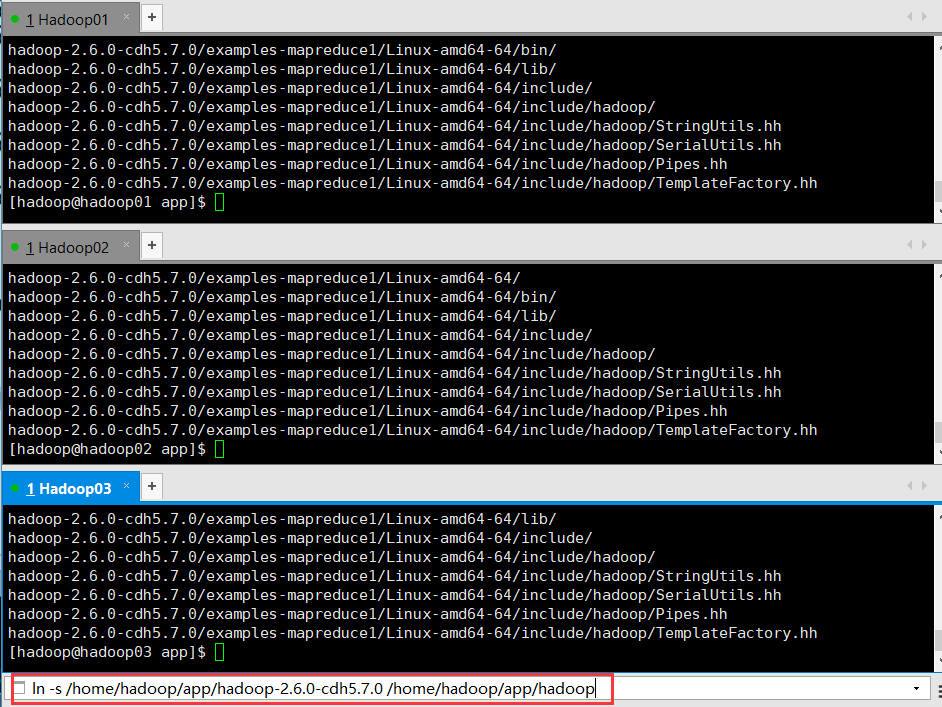
2.配置环境变量【每台】
vim ~/.bash_profile
export JAVA_HOME=/usr/java/jdk1.8.0_45
export PATH=$HADOOP_HOME/bin:$HADOOP_HOME/sbin:$JAVA_HOME/bin:$ZOOKEEPER_HOME/bin:$PATH
source ~/.bash_profile
3.到配置文件夹下配置必须的配置文件
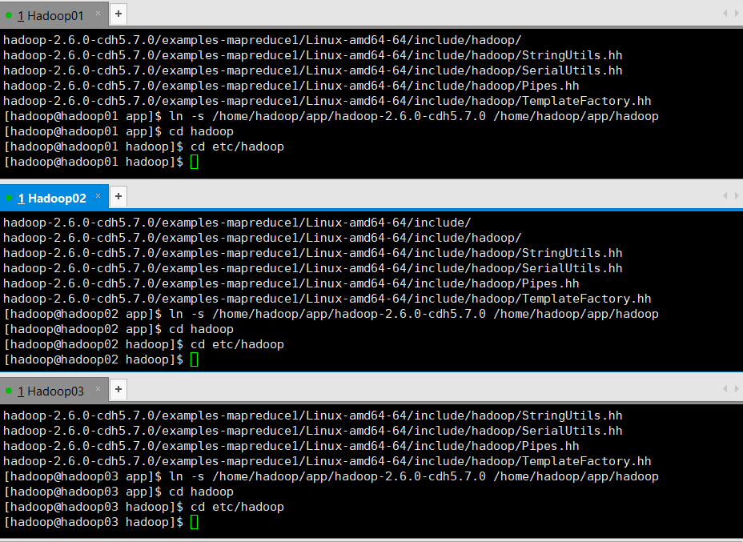
4.创建文件夹【每台】
mkdir -p /home/hadoop/app/hadoop-2.6.0-cdh5.7.0/tmp5.把需要配置的默认配置文件都删除
6.上传四个配置文件到节点【每个节点】$HADOOP_HOME/etc/hadoop
slaves
1 2 3 hadoop01 hadoop02 hadoop03
core-site.xml
1 2 3 4 5 6 7 8 9 10 11 12 13 14 15 16 17 18 19 20 21 22 23 24 25 26 27 28 29 30 31 32 33 34 35 36 37 38 39 40 41 42 43 44 45 46 47 48 49 50 51 52 53 54 55 56 57 <?xml version="1.0" encoding="UTF-8"?> <?xml-stylesheet type="text/xsl" href="configuration.xsl"?> <configuration > <property > <name > fs.defaultFS</name > <value > hdfs://wuwang</value > </property > <property > <name > fs.trash.checkpoint.interval</name > <value > 0</value > </property > <property > <name > fs.trash.interval</name > <value > 1440</value > </property > <property > <name > hadoop.tmp.dir</name > <value > /home/hadoop/app/hadoop-2.6.0-cdh5.7.0/tmp</value > </property > <property > <name > ha.zookeeper.quorum</name > <value > hadoop01:2181,hadoop02:2181,hadoop03:2181</value > </property > <property > <name > ha.zookeeper.session-timeout.ms</name > <value > 2000</value > </property > <property > <name > hadoop.proxyuser.hadoop.hosts</name > <value > *</value > </property > <property > <name > hadoop.proxyuser.hadoop.groups</name > <value > *</value > </property > <property > <name > io.compression.codecs</name > <value > org.apache.hadoop.io.compress.GzipCodec, org.apache.hadoop.io.compress.DefaultCodec, org.apache.hadoop.io.compress.BZip2Codec, org.apache.hadoop.io.compress.SnappyCodec </value > </property > </configuration >
hdfs-site.xml
1 2 3 4 5 6 7 8 9 10 11 12 13 14 15 16 17 18 19 20 21 22 23 24 25 26 27 28 29 30 31 32 33 34 35 36 37 38 39 40 41 42 43 44 45 46 47 48 49 50 51 52 53 54 55 56 57 58 59 60 61 62 63 64 65 66 67 68 69 70 71 72 73 74 75 76 77 78 79 80 81 82 83 84 85 86 87 88 89 90 91 92 93 94 95 96 97 98 99 100 101 102 103 104 105 106 107 108 109 110 111 112 113 114 115 116 117 118 119 120 121 122 123 124 125 126 127 128 <?xml version="1.0" encoding="UTF-8"?> <?xml-stylesheet type="text/xsl" href="configuration.xsl"?> <configuration > <property > <name > dfs.permissions.superusergroup</name > <value > hadoop</value > </property > <property > <name > dfs.webhdfs.enabled</name > <value > true</value > </property > <property > <name > dfs.namenode.name.dir</name > <value > /home/hadoop/app/hadoop-2.6.0-cdh5.7.0/data/dfs/name</value > <description > namenode 存放name table(fsimage)本地目录（需要修改）</description > </property > <property > <name > dfs.namenode.edits.dir</name > <value > ${dfs.namenode.name.dir}</value > <description > namenode粗放 transaction file(edits)本地目录（需要修改）</description > </property > <property > <name > dfs.datanode.data.dir</name > <value > /home/hadoop/app/hadoop-2.6.0-cdh5.7.0/data/dfs/data</value > <description > datanode存放block本地目录（需要修改）</description > </property > <property > <name > dfs.replication</name > <value > 3</value > </property > <property > <name > dfs.blocksize</name > <value > 268435456</value > </property > <property > <name > dfs.nameservices</name > <value > wuwang</value > </property > <property > <name > dfs.ha.namenodes.wuwang</name > <value > nn1,nn2</value > </property > <property > <name > dfs.namenode.rpc-address.wuwang.nn1</name > <value > hadoop01:8020</value > </property > <property > <name > dfs.namenode.rpc-address.wuwang.nn2</name > <value > hadoop02:8020</value > </property > <property > <name > dfs.namenode.http-address.wuwang.nn1</name > <value > hadoop01:50070</value > </property > <property > <name > dfs.namenode.http-address.wuwang.nn2</name > <value > hadoop02:50070</value > </property > <property > <name > dfs.journalnode.http-address</name > <value > 0.0.0.0:8480</value > </property > <property > <name > dfs.journalnode.rpc-address</name > <value > 0.0.0.0:8485</value > </property > <property > <name > dfs.namenode.shared.edits.dir</name > <value > qjournal://hadoop01:8485;hadoop02:8485;hadoop03:8485/wuwang</value > </property > <property > <name > dfs.journalnode.edits.dir</name > <value > /home/hadoop/app/hadoop-2.6.0-cdh5.7.0/data/dfs/jn</value > </property > <property > <name > dfs.client.failover.proxy.provider.wuwang</name > <value > org.apache.hadoop.hdfs.server.namenode.ha.ConfiguredFailoverProxyProvider</value > </property > <property > <name > dfs.ha.fencing.methods</name > <value > sshfence</value > </property > <property > <name > dfs.ha.fencing.ssh.private-key-files</name > <value > /home/hadoop/.ssh/id_rsa</value > </property > <property > <name > dfs.ha.fencing.ssh.connect-timeout</name > <value > 30000</value > </property > <property > <name > dfs.ha.automatic-failover.enabled</name > <value > true</value > </property > <property > <name > dfs.hosts</name > <value > /home/hadoop/app/hadoop-2.6.0-cdh5.7.0/etc/hadoop/slaves</value > </property > </configuration >
mapred-site.xml
1 2 3 4 5 6 7 8 9 10 11 12 13 14 15 16 17 18 19 20 21 22 23 24 25 26 27 28 29 30 31 32 <?xml version="1.0" encoding="UTF-8"?> <?xml-stylesheet type="text/xsl" href="configuration.xsl"?> <configuration > <property > <name > mapreduce.framework.name</name > <value > yarn</value > </property > <property > <name > mapreduce.jobhistory.address</name > <value > hadoop01:10020</value > </property > <property > <name > mapreduce.jobhistory.webapp.address</name > <value > hadoop01:19888</value > </property > <property > <name > mapreduce.map.output.compress</name > <value > true</value > </property > <property > <name > mapreduce.map.output.compress.codec</name > <value > org.apache.hadoop.io.compress.SnappyCodec</value > </property > </configuration >
yarn-site.xml
1 2 3 4 5 6 7 8 9 10 11 12 13 14 15 16 17 18 19 20 21 22 23 24 25 26 27 28 29 30 31 32 33 34 35 36 37 38 39 40 41 42 43 44 45 46 47 48 49 50 51 52 53 54 55 56 57 58 59 60 61 62 63 64 65 66 67 68 69 70 71 72 73 74 75 76 77 78 79 80 81 82 83 84 85 86 87 88 89 90 91 92 93 94 95 96 97 98 99 100 101 102 103 104 105 106 107 108 109 110 111 112 113 114 115 116 117 118 119 120 121 122 123 124 125 126 127 128 129 130 131 132 133 134 135 136 137 138 139 140 141 142 143 144 145 146 147 148 149 150 151 152 153 154 155 156 157 158 159 160 161 162 163 164 165 166 167 168 169 170 171 172 <?xml version="1.0" encoding="UTF-8"?> <?xml-stylesheet type="text/xsl" href="configuration.xsl"?> <configuration > <property > <name > yarn.nodemanager.aux-services</name > <value > mapreduce_shuffle</value > </property > <property > <name > yarn.nodemanager.aux-services.mapreduce.shuffle.class</name > <value > org.apache.hadoop.mapred.ShuffleHandler</value > </property > <property > <name > yarn.nodemanager.localizer.address</name > <value > 0.0.0.0:23344</value > <description > Address where the localizer IPC is.</description > </property > <property > <name > yarn.nodemanager.webapp.address</name > <value > 0.0.0.0:23999</value > <description > NM Webapp address.</description > </property > <property > <name > yarn.resourcemanager.connect.retry-interval.ms</name > <value > 2000</value > </property > <property > <name > yarn.resourcemanager.ha.enabled</name > <value > true</value > </property > <property > <name > yarn.resourcemanager.ha.automatic-failover.enabled</name > <value > true</value > </property > <property > <name > yarn.resourcemanager.ha.automatic-failover.embedded</name > <value > true</value > </property > <property > <name > yarn.resourcemanager.cluster-id</name > <value > yarn-cluster</value > </property > <property > <name > yarn.resourcemanager.ha.rm-ids</name > <value > rm1,rm2</value > </property > <property > <name > yarn.resourcemanager.scheduler.class</name > <value > org.apache.hadoop.yarn.server.resourcemanager.scheduler.fair.FairScheduler</value > </property > <property > <name > yarn.resourcemanager.recovery.enabled</name > <value > true</value > </property > <property > <name > yarn.app.mapreduce.am.scheduler.connection.wait.interval-ms</name > <value > 5000</value > </property > <property > <name > yarn.resourcemanager.store.class</name > <value > org.apache.hadoop.yarn.server.resourcemanager.recovery.ZKRMStateStore</value > </property > <property > <name > yarn.resourcemanager.zk-address</name > <value > hadoop01:2181,hadoop02:2181,hadoop03:2181</value > </property > <property > <name > yarn.resourcemanager.zk.state-store.address</name > <value > hadoop01:2181,hadoop02:2181,hadoop03:2181</value > </property > <property > <name > yarn.resourcemanager.address.rm1</name > <value > hadoop01:23140</value > </property > <property > <name > yarn.resourcemanager.address.rm2</name > <value > hadoop02:23140</value > </property > <property > <name > yarn.resourcemanager.scheduler.address.rm1</name > <value > hadoop01:23130</value > </property > <property > <name > yarn.resourcemanager.scheduler.address.rm2</name > <value > hadoop02:23130</value > </property > <property > <name > yarn.resourcemanager.admin.address.rm1</name > <value > hadoop01:23141</value > </property > <property > <name > yarn.resourcemanager.admin.address.rm2</name > <value > hadoop02:23141</value > </property > <property > <name > yarn.resourcemanager.resource-tracker.address.rm1</name > <value > hadoop01:23125</value > </property > <property > <name > yarn.resourcemanager.resource-tracker.address.rm2</name > <value > hadoop02:23125</value > </property > <property > <name > yarn.resourcemanager.webapp.address.rm1</name > <value > hadoop01:8088</value > </property > <property > <name > yarn.resourcemanager.webapp.address.rm2</name > <value > hadoop02:8088</value > </property > <property > <name > yarn.resourcemanager.webapp.https.address.rm1</name > <value > hadoop01:23189</value > </property > <property > <name > yarn.resourcemanager.webapp.https.address.rm2</name > <value > hadoop02:23189</value > </property > <property > <name > yarn.log-aggregation-enable</name > <value > true</value > </property > <property > <name > yarn.log.server.url</name > <value > http://hadoop01:19888/jobhistory/logs</value > </property > <property > <name > yarn.nodemanager.resource.memory-mb</name > <value > 2048</value > </property > <property > <name > yarn.scheduler.minimum-allocation-mb</name > <value > 1024</value > <discription > 单个任务可申请最少内存，默认1024MB</discription > </property > <property > <name > yarn.scheduler.maximum-allocation-mb</name > <value > 2048</value > <discription > 单个任务可申请最大内存，默认8192MB</discription > </property > <property > <name > yarn.nodemanager.resource.cpu-vcores</name > <value > 2</value > </property > </configuration >
7.修改vim hadoop-env.sh 【三台】
export JAVA_HOME=/usr/java/jdk1.8.0_45
8.第一次启动步骤：
（1）先启动JN【每台】
这里有个问题：生产上如何增加JN的节点呢？手动增加journalnode节点
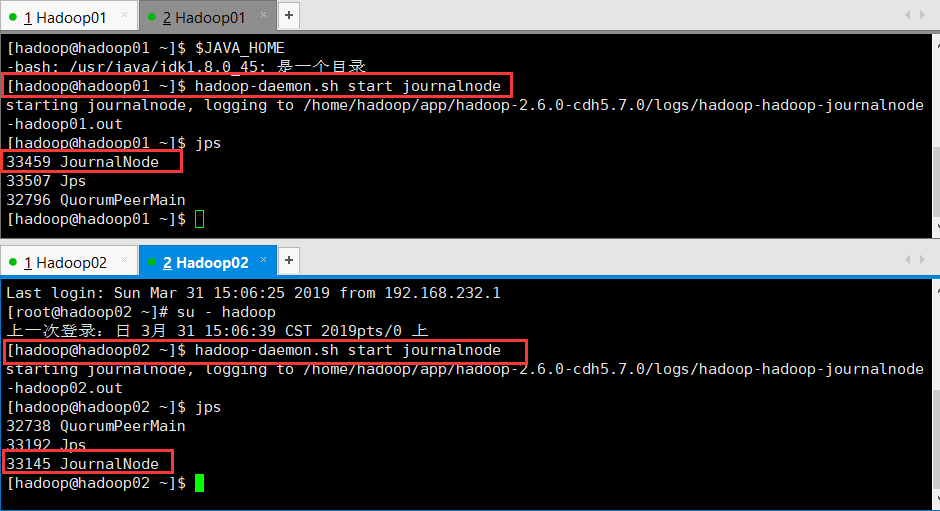
（2）格式化Hadoop【hadoop01】并将data目录传入hadoop2
[hadoop@hadoop01 hadoop]$ hadoop namenode -format
（3）初始化ZKFC
[hadoop@hadoop01 hadoop]$ hdfs zkfc -formatZK
如果出错重配置文件开始；首先关闭相关进程；清空data目录；删掉相关配置文件；并且ZK里的hadoop组件相关目录也要删除（hadoop ha）。
（3）在hadoop01启动dfs集群
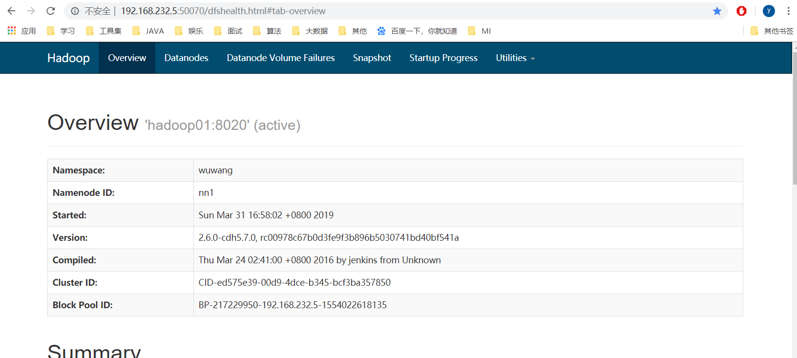
（4）在hadoop01启动yarn集群
[hadoop@hadoop01 hadoop]$ start-yarn.sh
（5）手动启动RM2
[hadoop@hadoop02 hadoop]$ yarn-daemon.sh start resourcemanager
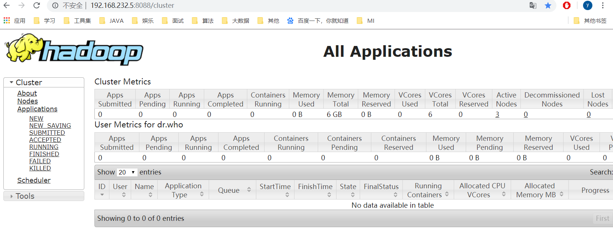
（6）启动日志管理
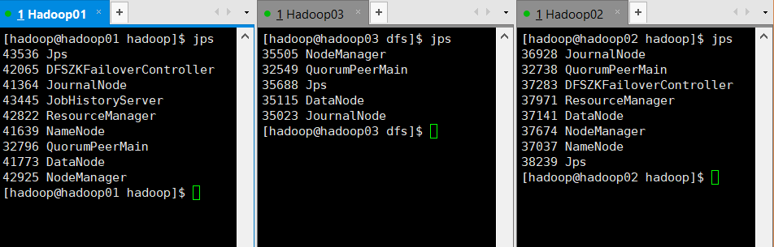
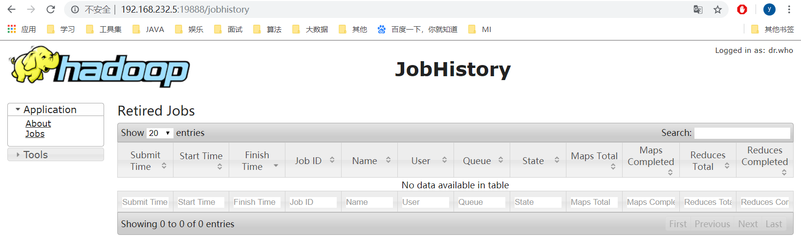
（7）运行一个例子 出现错误排查：是这个版本不支持snappy压缩格式的问题
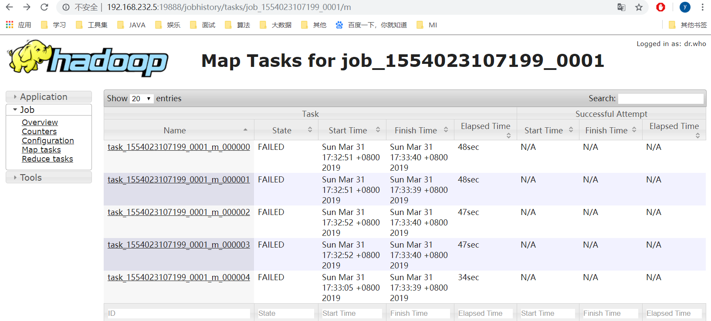
通过查看我们压缩格式不支持：如下查看
为什么要使用这个压缩格式呢？可以减少map的磁盘io
1 2 3 4 5 6 7 8 9 10 11 12 13 14 15 16 17 18 19 20 21 22 23 24 25 26 27 28 29 [hadoop@hadoop01 hadoop]$ hadoop Usage: hadoop [--config confdir] COMMAND where COMMAND is one of: fs run a generic filesystem user client version print the version jar <jar> run a jar file checknative [-a|-h] check native hadoop and compression libraries availability distcp <srcurl> <desturl> copy file or directories recursively archive -archiveName NAME -p <parent path> <src>* <dest> create a hadoop archive classpath prints the class path needed to get the credential interact with credential providers Hadoop jar and the required libraries daemonlog get/set the log level for each daemon trace view and modify Hadoop tracing settings or CLASSNAME run the class named CLASSNAME Most commands print help when invoked w/o parameters. [hadoop@hadoop01 hadoop]$ hadoop checknative 19/03/31 17:38:04 WARN util.NativeCodeLoader: Unable to load native-hadoop library for your platform... using builtin -java classes where applicable Native library checking: hadoop: false zlib: false snappy: false lz4: false bzip2: false openssl: false 19/03/31 17:38:04 INFO util.ExitUtil: Exiting with status 1 [hadoop@hadoop01 hadoop]$
去掉配置的压缩条件就可以正常运行本demo
6、停止集群并进行第二次启动 [hadoop@hadoop01 hadoop]$ stop-all.sh启动集群
7、集群监控 HDFS: http://hadoop01:50070/ http://hadoop02:50070/ http://hadoop01:8088 http://hadoop02:8088/cluster/cluster http://hadoop01:19888/jobhistory
问题总结 1、搭建过程中把win10的配置文档直接rz到centos7上；造成slaves的配置service没有生效
如何去解决：
1如果没有直接定位到slaves文件上可以先去百度；肯定会得到答案；将slaves直接删除；vim slaves直接输入service即可解决。
2最笨的方法是把所有的配置全部在centos7上本地自建；重新格式化集群即可。2、yarn中出现错误；要去JobHistory页面查看相应作业的运行信息
3、为什么map端用snappy压缩格式；而reduce用gzip或者bzip2的压缩格式呢？为什么每个reduce端压缩后的数据不要超过一个block的大小呢？
1 2 3 4 5 6 7 8 9 10 [hadoop@hadoop ~]$ hadoop checknative 19/04/02 09:02:34 INFO bzip2.Bzip2Factory: Successfully loaded & initialized native-bzip2 library system-native 19/04/02 09:02:34 INFO zlib.ZlibFactory: Successfully loaded & initialized native-zlib library Native library checking: hadoop: true /home/hadoop/app/hadoop-2.8.3/lib/native/libhadoop.so.1.0.0 zlib: true /lib64/libz.so.1 snappy: true /lib64/libsnappy.so.1 lz4: true revision:10301 bzip2: true /lib64/libbz2.so.1 openssl: false Cannot load libcrypto.so (libcrypto.so: cannot open shared object file: No such file or directory)!
参考[博客大数据压缩](https://my.oschina.net/u/4005872/blog/3030869)
1、首先我们根据博客中的压缩格式对比snappy的压缩时间最快；而map是输出数据落地磁盘故选择时间最快的输出压缩格式snappy；
2、reduce是结果落盘；故考虑占用磁盘空间的大小；选择高压缩比gzip或者bzip2；而考虑到会用reduce结果做二次运算；
则对于选用不支持分割gzip或者bzip2原因有两个：
（1）是这两个压缩格式高
（2）对于不可分割我们采用每个reduce端压缩后的数据不要超过一个block的大小的方法；则对于后续的map清洗也就不会出现分割问题。